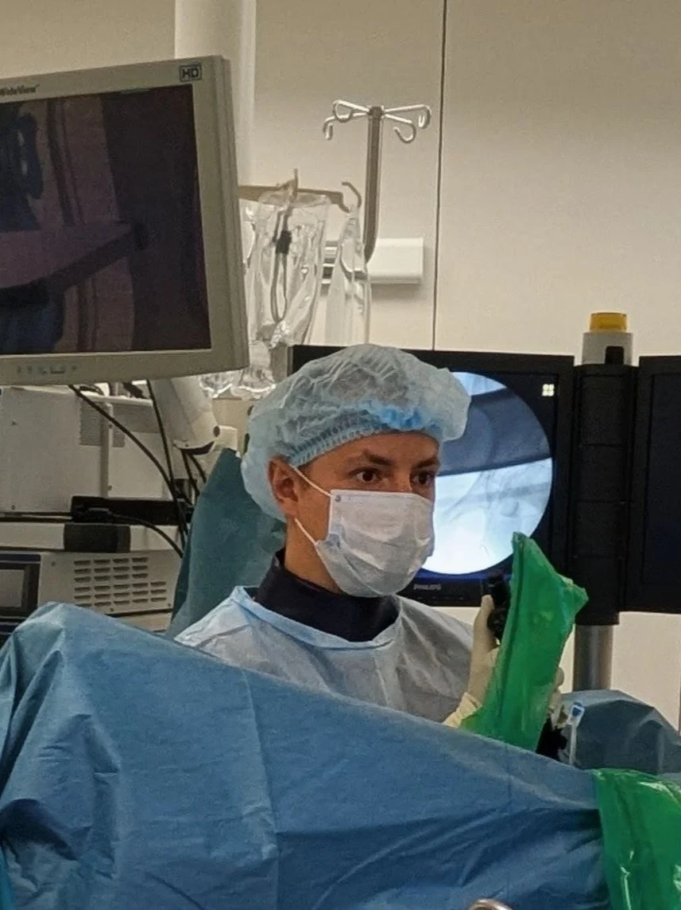

Только необходимые обследования
Не назначаю «на всякий случай». Каждое исследование должно влиять на тактику лечения — иначе оно бессмысленно.
Диагностика и эндоскопическое лечение камней в почках, мочеточниках и мочевом пузыре. Работаю в условиях современного многопрофильного стационара ФГБУ ВЦЭРМ им. А. М. Никифорова МЧС России в Санкт-Петербурге.

Не назначаю «на всякий случай». Каждое исследование должно влиять на тактику лечения — иначе оно бессмысленно.
Объясняю диагноз простым языком, показываю снимки и результаты. Вы понимаете, что происходит и почему.
Урологические темы требуют особого такта. Приём проходит спокойно, без неловкости и лишних вопросов.
Полный спектр урологической помощи — от первичной диагностики до наблюдения после лечения.
Эндоскопические операции при камнях почек, мочеточников и мочевого пузыря. Тип вмешательства определяется на очной консультации в Санкт-Петербурге.
Моя задача — не назначить как можно больше анализов, а быстро понять причину и объяснить её пациенту.
Занимаюсь диагностикой и эндоскопическим лечением камней в почках, мочеточниках и мочевом пузыре в условиях современного многопрофильного стационара (ФГБУ ВЦЭРМ им. А. М. Никифорова МЧС России) в Санкт-Петербурге. Использую принципы доказательной медицины, опираюсь на клинические руководства Российской, Европейской и Американской ассоциаций урологов.
Не откладывайте визит — ранняя диагностика существенно упрощает лечение и сокращает его срок.
В связи с травмой была необходима эндоскопическая операция по урологии. Операция прошла быстро и лечение по итогу прошло успешно. Рекомендую врача и желаю всем здоровья!
Профессиональный подход. Внимание к пациенту. Ответы на все задаваемые вопросы.
Обратился в эту клинику, к этому врачу, так как в других клиниках мне не помогли решить проблему — камень в почке. Аномальное развитие почки, камень крупный. Владимир Валерьевич взялся решить вопрос и сделал это в кратчайшие сроки! Операция эндоскопическая и прошла успешно! Наконец-то я избавлен от длительных страданий!
Понравилась организация лечебного процесса в клинике. Всё происходит чётко в заранее обговорённые сроки. Отношение к пациентам в высшей степени доброжелательное.
Я попала в клинику по направлению из г. Воркуты (камень в почке). Заранее отправила все анализы. Назначили день, когда можно лечь в стационар. Доктор внимательно ещё раз перепроверил все анализы, заключение от терапевта. Внимательно меня выслушал и отправил в палату готовиться к операции. Вечером опять навестил, узнал, как идёт подготовка. На следующий день меня прооперировали.
Операция прошла успешно, на следующий день я чувствовала себя хорошо, и уже на третий день меня выписали. Огромное вам спасибо, Владимир Валерьевич, за отношение к своим пациентам и ваши золотые руки!
Оставьте заявку — администратор свяжется в течение 15 минут, подберёт удобное время и ответит на вопросы.